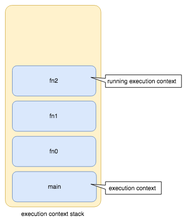

执行上下文
本章节主要讲述在事件循环中，每一个宏任务或每一个微任务是如何被具体执行的。即被推入执行上下文栈（execution context stack，亦称调用栈 call stack）的代码是如何被具体执行的。
执行上下文定义
执行上下文（execution context（ECMAScript））用于追踪代码的执行。在任何时候在一个客户端中最多只存在一个当前正在执行代码的执行上下文，并且被称作客户端的 当前执行上下文（running execution context）。
执行上下文栈（亦称调用栈）定义
执行上下文栈（execution context stack，亦称调用栈 call stack）用于追踪执行上下文。当前执行上下文总是执行上下文栈中最上层的那一个执行上下文。
注：
- 执行上下文栈即是执行上下文的容器。

Running execution context 的更替
（来源）
A new execution context is created whenever control is transferred from the executable code associated with the currently running execution context to executable code that is not associated with that execution context.The newly created execution context is pushed onto the stack and becomes the running execution context.
（来源）
Once the running execution context has been suspended a different execution context may become the running execution context and commence evaluating its code. At some later time a suspended execution context may again become the running execution context and continue evaluating its code at the point where it had previously been suspended.
从当前运行的执行上下文相关联的可执行代码转移控制权（
control，可理解为执行权）到与该执行上下文不相关的可执行代码时，就会创建新的执行上下文。- 可理解为在一个函数中调用另一个函数时，就会创建一个新的执行上下文。
新的执行上下文将会代替之前的执行上下文成为当前执行的执行上下文（
running execution context）并推入执行上下文栈中（execution context stack）。之前的执行上下文将会进入
冻结状态（suspended）（来源），并等待新的执行上下文执行完成。待新的执行上下文执行完成将会恢复之前的执行上下文的执行。
以上可以解释 JavaScript 语言精粹 P27中，作者介绍到，在一个函数（称为 a）中调用一个函数（称为 b）时，a 会暂停执行，进入 冻结 状态，并将当前执行权转移给函数 b。待 b 执行完成后，执行权由 b 回到 a，这样 a 得以继续恢复执行接下来的代码。